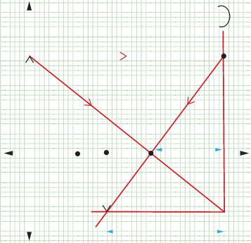

5. Using the chosen scale, the nature, size and position of the image can be determined. Thus,
- (a) The measured height of the image, , which corresponds to the actual height of 12 cm (1 cm represents 5 cm).
- (b) The measured image distance, , which corresponds to the actual image distance of 24 cm from the mirror.
- (c) True rays form the point of intersection, so the image is real.
- (d) The image is inverted.
- (e) Magnification , the image is diminished.
Images formed by convex mirrors
In convex mirrors, the the centre of curvature, C, and the focal point, F, are located behind the mirror, that is, on the side of the mirror opposite the reflecting surface. Thus, a convex mirror has a negative focal length.
A convex mirror is sometimes referred to as a diverging mirror because incident light rays diverge upon reflection from the mirror surface. As a result, the reflected light rays never intersect on the object side (front side) of the mirror; instead, they appear to converge behind the mirror when extended backwards. For this reason, convex mirrors produce virtual images that are located somewhere behind the mirror. To determine the image location, only a pair of incident and reflected rays needs to be drawn. These rays are the same as those used in concave mirror ray diagrams, except that in this case, the rays appear to diverge from a point behind the convex mirror. The divergence point can be determined using the laws of reflection for convex mirrors (Figure 4.27), stated as:
- 1. Any incident ray travelling parallel to the principal axis will be reflected in such a manner that the reflected ray extended backwards pass through the focal point of the mirror.
- 2. Any incident ray travelling toward a convex mirror such that its extension passes through the focal point will be reflected parallel to the principal axis.
- 3. An incident ray, not parallel to the principal axis, that strikes the pole of the convex mirror is reflected such